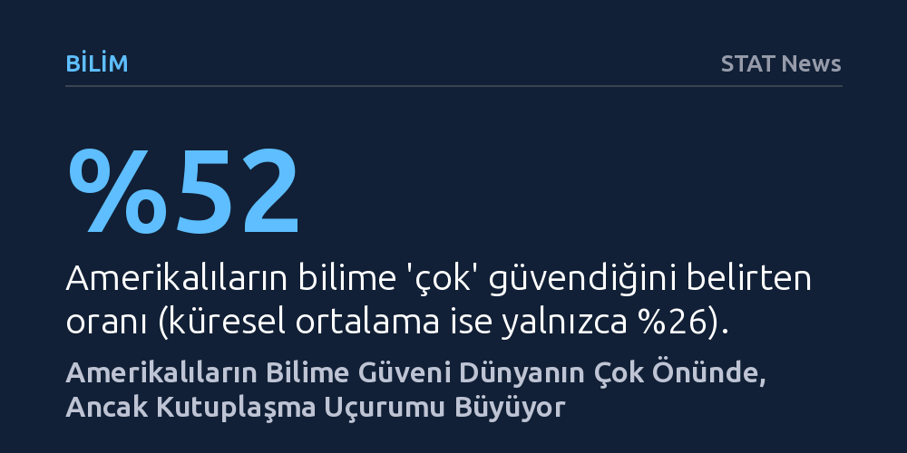

BILIM · STAT News · 2026-10-11
Wellcome anketi, Amerikalıların bilime güveninin yüzde 52 ile küresel ortalamanın iki katı olduğunu, ancak ülkedeki kutuplaşmanın eğitimli ve seküler kesimlerin artan desteğinden kaynaklandığını gösteriyor. Toplumun bir kesimi bilimden uzaklaşmıyor; aradaki makas diğer kesimlerin bilime daha fazla sahip çıkmasıyla açılıyor.
Amerika'daki bilim kutuplaşmasının halkın bilimden soğumasından değil, avantajlı kesimlerin bilime desteğinin çok daha hızlı artmasından ve faydanın topluma eşit dağılmamasından kaynaklandığını gösteriyor.

Dünyanın dört bir yanından gelen aşı karşıtlığı haberleri ve hararetli tartışmalar göz önüne alındığında, ABD'de bilime duyulan güvenin çöktüğünü düşünmek kolaydır. Oysa 140 ülkede yürütülen en güncel Wellcome Global Monitor araştırması, tablonun tam tersi olduğunu ortaya koyuyor. Amerikalıların yüzde 52'si bilime "çok güvendiğini" belirtiyor; bu oran dünya genelinde yalnızca yüzde 26 seviyesinde kalıyor. Hatta bir sağlık çalışanının önerdiği aşıyı derhal yaptırmak isteyenlerin oranı ABD'de yüzde 45 iken, Almanya gibi emsal bir ülkede bu oran yüzde 28'e kadar geriliyor.
Daha da çarpıcı olanı, bilimin topluma fayda sağladığına dair inanç küresel ölçekte gerilerken ABD'de yükselişe geçmiş durumda. Dünya genelinde bilimin toplumun çoğuna yarar getirdiğini düşünenlerin oranı 2018'den bu yana yüzde 42'den yüzde 37'ye düşerken, Amerika'da bu oran yüzde 48'den yüzde 57'ye fırladı. Kısacası, dışarıdan derin bir güvensizlik sarmalında görünen Amerikan toplumu, genel toplamda akran ülkelerin oldukça önünde yer alıyor.
Ancak bu genel ortalamalar tablonun yalnızca bir yüzünü yansıtıyor. Verilerin ayrıntılarına inildiğinde, ABD'nin bilime güven konusunda diğer zengin ülkelere kıyasla çok daha sert bir toplumsal bölünme yaşadığı görülüyor. Yüksek gelirli diğer ülkelerde dindar olanlar ile olmayanlar arasında bilimin faydasına inanç farkı ortalama 5 puan iken, Amerika'da bu makas tam 24 puana çıkıyor.
Benzer bir yarılma coğrafya ve eğitim düzeyinde de kendini hissettiriyor. Şehirde ve kırsalda yaşayan Amerikalılar arasındaki güven farkı 19 puanı bulurken, emsal ülkelerde bu fark sadece 3 puan civarında seyrediyor. Üniversite mezunlarının yüzde 71'i bilimin topluma yarar sağladığına inanırken, dört yıllık lisans diploması bulunmayanlarda bu oran yüzde 47'de kalıyor. Uzmanlar, Amerikalıların anketlerde ılımlı seçenekler yerine uç noktaları işaretleme eğiliminin bu farkları bir miktar büyütebileceğini belirtse de tablodaki kutuplaşma inkâr edilemez bir boyutta.
Toplumdaki bu ayrışmanın ilk bakışta dindar ya da diplomasız kesimlerin bilimden uzaklaşmasından kaynaklandığı düşünülebilir. Oysa veriler çok farklı bir dinamiğe işaret ediyor: Geleneksel olarak bilime daha mesafeli duran gruplar aslında bilime sırt çevirmiş değil. Kendini dindar olarak tanımlayan Amerikalılar arasında bilimin çoğunluğa fayda sağladığına inananların oranı son yedi yılda gerilemek bir yana yüzde 46'dan yüzde 50'ye çıktı; dahası bu kesim benzer ülkelerdeki akranlarına göre aşıya daha sıcak bakıyor. Dört yıllık üniversite diploması olmayanlarda da benzer bir yükseliş gözleniyor.
O hâlde aradaki uçurumu açan asıl etken ne? Yanıt, toplumun diğer yarısının bilime adeta koşar adım sarılmasında yatıyor. Son yedi yılda üniversite mezunlarının bilime bakışındaki olumlu yaklaşım 13 puan, seküler Amerikalılarınki ise 15 puan sıçradı. Yani Amerika'daki kutuplaşma bir kesimin bilim karşıtı hâle gelmesinden değil; eğitimli ve seküler kesimlerin bilimin nimetlerine giderek daha güçlü biçimde sahip çıkmasından ve aradaki mesafeyi tek taraflı olarak açmasından kaynaklanıyor.
Kutuplaşmanın kökleri, bilimin sunduğu imkânların herkesin günlük yaşamına eşit yansımamasında yatıyor. Büyük bir şehirde yaşayan ve en gelişmiş üniversite hastanesine kolayca erişebilen bir kanser hastası bilimin hayat kurtaran etkisini doğrudan hissederken, en temel sağlık hizmeti için kilometrelerce yol katetmek zorunda kalan kırsal kesim sakini kendini geride bırakılmış hissediyor. Zaten Amerikalıların sadece yüzde 40'ı hastanelere ve kliniklere yüksek güven duyduğunu belirtiyor; bu oran Uruguay ve Portekiz seviyesinde. Siyasi elitlerin bilimi partizan bir çatışma aracı hâline getirmesi de bu güvensizliği körüklüyor.
Kamu sağlığı uzmanları, çözümün yalnızca on yıllar alacak yapısal reformlarda değil, bilim insanlarının iletişim kurma biçiminde olduğunu vurguluyor. Bilimin günlük hayattaki somut yararlarını halka kibirlenmeden aktarmak gerekiyor. de Beaumont Vakfı yöneticisi Brian Castrucci durumu şu sözlerle özetliyor: "İhtiyacımız olan şey daha iyi tartışmacılar değil, daha iyi iletişimciler olmak." Halktan körü körüne güven beklemek yerine, bilimin insanların hayatına nasıl dokunduğunu anlatmak tek çıkar yol olarak öne çıkıyor.